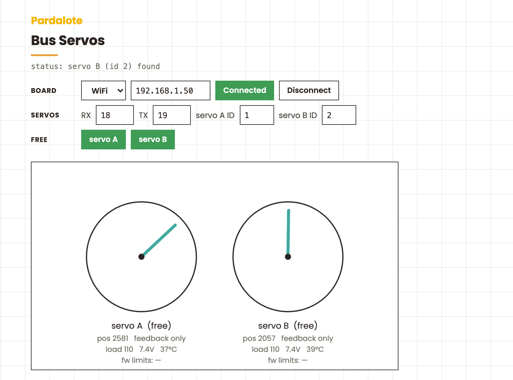

Drive smart serial servos — the kind used in robot arms. Pose a joint by hand, read it back, and replay it.

Drive two Feetech ST-series serial bus servos from the browser: drag to command position, read live position / load / voltage / temperature back, and free a joint to hand-pose it (torque off) then re-hold it.
configureBus({ rxPin, txPin }))The STS3215 is the same servo used in the LeRobot SO-100/SO-101 arms.
Servos ship as ID 1. To renumber, put a single servo on the bus, attach
it, and call setId(newId) — then repeat one at a time. scan() lists the
IDs currently responding on the bus.
Install the SCServo library (from the Waveshare Bus Servo Adapter wiki or the Feetech SDK — usually a ZIP, not in the Library Manager), then upload File → Examples → Pardalote → bus-servos. Note the IP the board reports.
This is a tool — it works out of the box, no code editing:
index.html in a browser.The browser remembers the IP and IDs, so next visit it reconnects with one click.
| Input | Action |
|---|---|
| Drag a dial | command that joint's position |
Torque buttons or 1 / 2 |
free that joint (torque off) to pose by hand; press again to re-hold |
write() takes counts; writeDegrees()
and .positionDegrees convert (accurate for ST, nominal for SC).setLimits(min, max) writes the
servo's own Min/Max position registers, so the range holds even without the
browser in the loop.disableTorque() lets you move
the joint by hand while read() streams the position back — the basis of the
record-a-trajectory workflow in projects like LeRobot.calibrate() sets that as centre (like LeRobot centring on resolution / 2).